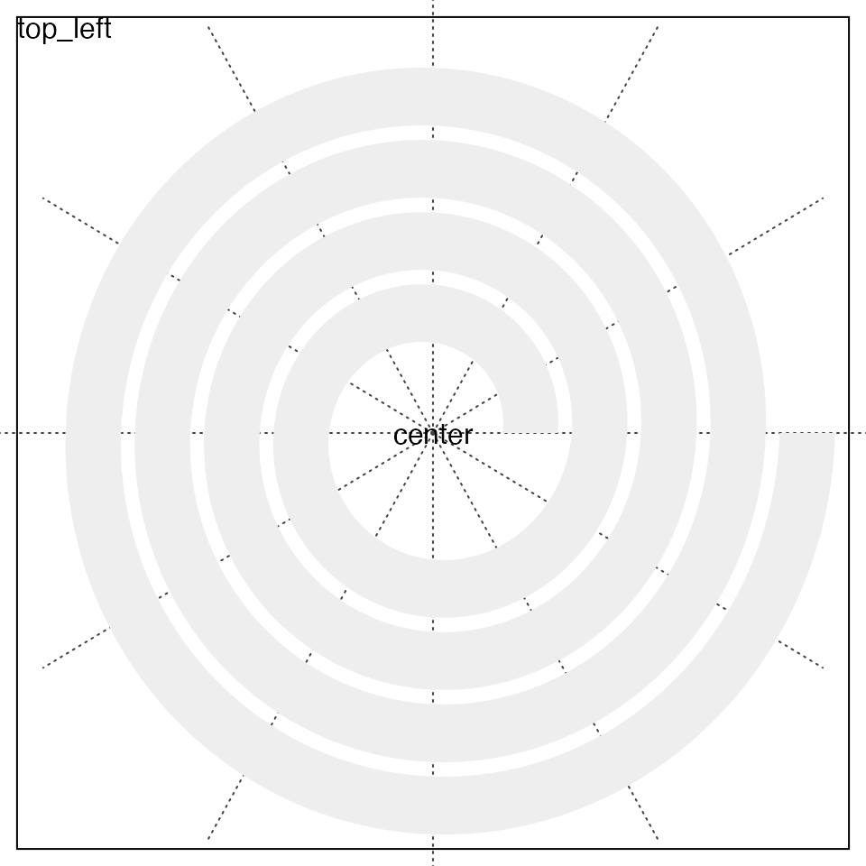
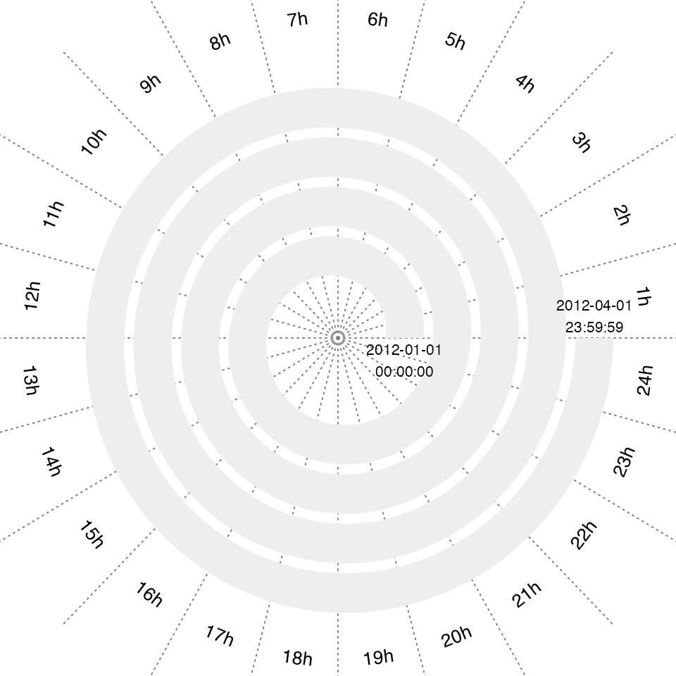
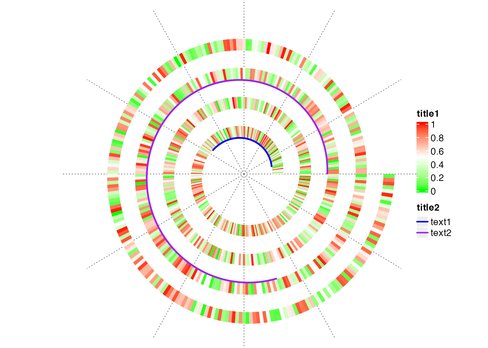
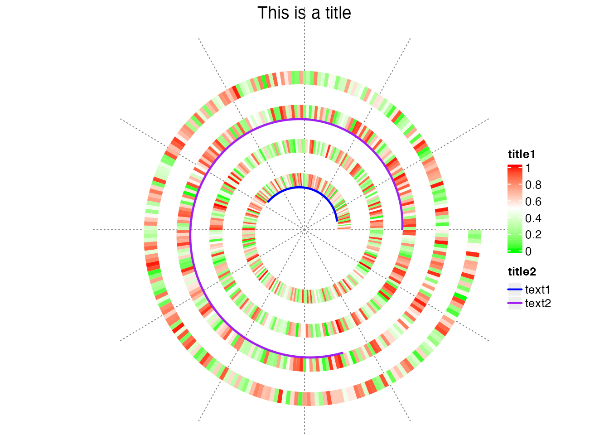
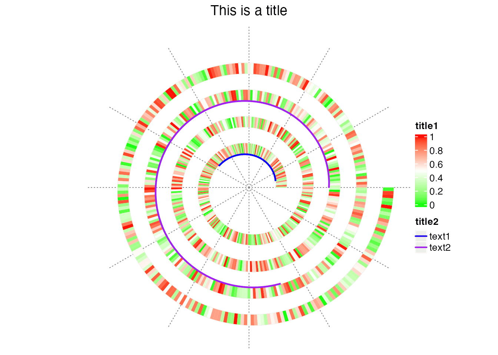
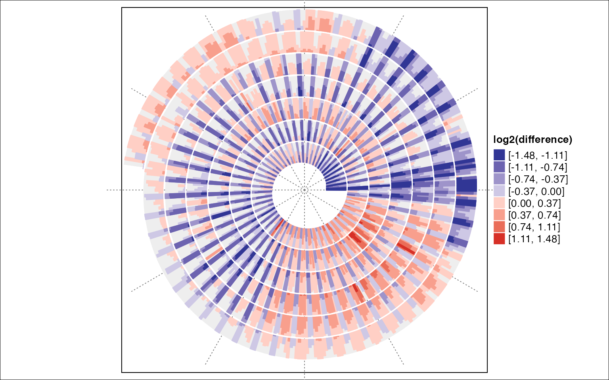
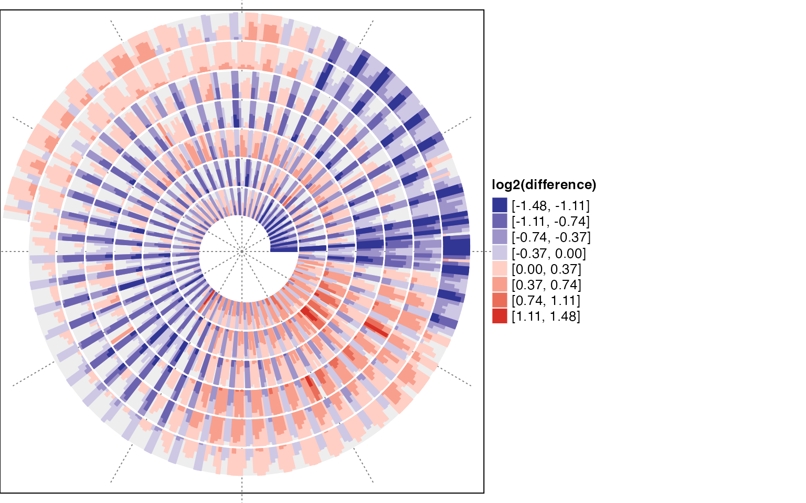

In this vignette, I demonstrate how to add text and legend to the spiral plot.
spiralize is implemented under grid graphics system, thus functions from grid need to be used with spiralize.
The spiral plot is drawn in a square viewport, as shown in the following figure, thus, simply you can use grid.text() to add text to a specific position.
library(spiralize)
spiral_initialize()
spiral_track()
grid.rect(gp = gpar(fill = NA))
grid.text("center", 0, 0, default.units = "native")
grid.text("top_left", 0, 1, default.units = "npc", just = c("left", "top"))
For time series data, users might want to add texts to describe different “seasons/sectors”. In the following example, assume period is day, I add hour names to the corresponding sectors in the polar coordinate system. I also add text to the start and end of the spiral.
spiral_initialize_by_time(xlim = c("2021-01-01 00:00:00", "2021-01-04 23:59:59"), padding = unit(2, "cm"))## 'unit_to_axis' is set to 'mins'.
## 'period' is set to 'days'.
spiral_track()
s = current_spiral()
d = seq(360/24/2, 360, by = 360/24) %% 360
for(i in seq_along(d)) {
df = polar_to_cartesian(d[i]/180*pi, (s$max_radius + 1.5))
grid.text(paste0(i, "h"), x = df[1, 1], y = df[1, 2], default.unit = "native",
rot = ifelse(d[i] > 0 & d[i] < 180, d[i] - 90, d[i] + 90), gp = gpar(fontsize = 10))
}
x = s$get_numeric_x(c("2021-01-01 00:00:00", "2021-01-04 23:59:59"))
df = xy_to_cartesian(x, 0.5)
grid.text("2012-01-01\n00:00:00", df$x[1], df$y[1], default.units = "native", vjust = 1.2,
gp = gpar(fontsize = 8))
grid.text("2012-04-01\n23:59:59", df$x[2], df$y[2], default.units = "native", vjust = -0.2,
gp = gpar(fontsize = 8))
The drawback of the previous plot is e.g. 1h and 2h are too far away to the spiral. Users might want to put the text closer to the spiral. This can be done by just drawing text in the track, but with y-locations larger than the maximal y-location in the track (drawing above the plot region of the track).
spiral_initialize_by_time(xlim = c("2021-01-01 00:00:00", "2021-01-04 23:59:59"), padding = unit(1, "cm"))## 'unit_to_axis' is set to 'mins'.
## 'period' is set to 'days'.
spiral_track()
# ymax of the track is 1, but here we draw the text at y = 1.5
library(lubridate)
spiral_text(as.POSIXlt("2021-01-04 00:30:00") + lubridate::hours(0:23), y = 1.5, paste0(1:24, "h"), gp = gpar(fontsize = 8))
spiral_text("2021-01-01 00:00:00", 0.5, "01-01", gp = gpar(fontsize = 8))
spiral_text("2021-01-02 00:00:00", 0.5, "01-02", gp = gpar(fontsize = 8))
spiral_text("2021-01-03 00:00:00", 0.5, "01-03", gp = gpar(fontsize = 8))
spiral_text("2021-01-04 00:00:00", 0.5, "01-04", gp = gpar(fontsize = 8))
Legends are important graphics elements in a plot which guild users to understand the plot. spiralize does not directly draw legends, but it can be very easily done with other legend functions, such as Legend() and packLegend() from ComplexHeatmap package.
Legend() creates a single legend, either continuous or discrete, and packLegend() combines a list of legends into a single object. Check the following example:
n = 1000
spiral_initialize(xlim = c(0, n))
spiral_track(height = 0.4)
x = runif(n)
col_fun = circlize::colorRamp2(c(0, 0.5, 1), c("green", "white", "red"))
spiral_rect(1:n - 1, 0, 1:n, 1, gp = gpar(fill = col_fun(x), col = NA))
spiral_highlight(10, 100, type = "line", gp = gpar(col = "blue"))
spiral_highlight(500, 700, type = "line", gp = gpar(col = "purple"))
library(ComplexHeatmap)
lgd = packLegend(
Legend(title = "title1", col_fun = col_fun),
Legend(title = "title2", type = "lines", legend_gp = gpar(col = c("blue", "purple"), lwd = 2),
at = c("text1", "text2"))
)
draw(lgd, x = unit(1, "npc") + unit(2, "mm"), just = "left")
When I draw the legend, I put the legend to a position of unit(1, "npc") + unit(2, "mm") which is 2mm to the right of the spiral plot. To make the legend properly visible, you must set the image width larger than the image height in order to give space to the legend (in the image above, the width is 7 inch and the height is 5 inch).
If you also want to add title for the plot, you need to do a little bit more. One simple way is to push several viewports, as shown in the folowing code.
grid.newpage()
title_height = grobHeight(textGrob("A", gp = gpar(fontsize = 14)))*2
pushViewport(viewport(y = 1, height = title_height, just = "top"))
grid.text("This is a title", gp = gpar(fontsize = 14))
popViewport()
pushViewport(viewport(y = 0, height = unit(1, "npc") - title_height, just = "bottom"))
spiral_initialize(xlim = c(0, n), newpage = FALSE) # here setting newpage = FALSE is important!
spiral_track(height = 0.4)
spiral_rect(1:n - 1, 0, 1:n, 1, gp = gpar(fill = col_fun(x), col = NA))
spiral_highlight(10, 100, type = "line", gp = gpar(col = "blue"))
spiral_highlight(500, 700, type = "line", gp = gpar(col = "purple"))
draw(lgd, x = unit(1, "npc") + unit(2, "mm"), just = "left")
spiral_clear()
popViewport()
One thing that needs to be noted here is, since here we are manipulating viewports, it is suggested to call spiral_clear() when the spiral plot is done so that the arrangement of viewports won’t be messed up.
There is also a convinient way to construct legend for horizon chart. Function spiral_horizon() actually returns an object which later can be used in horizon_legend() to generate a legend where the legend labels are properly formatted.
The following plot shows the downloads of ggplot2 over time:
df = readRDS(system.file("extdata", "ggplot2_downloads.rds", package = "spiralize"))
day_diff = as.double(df$date[nrow(df)] - df$date[1], "days")
year_mean = tapply(df$count, lubridate::year(df$date), function(x) mean(x[x > 0]))
df$diff = log2(df$count/year_mean[as.character(lubridate::year(df$date))])
df$diff[is.infinite(df$diff)] = 0
q = quantile(abs(df$diff), 0.99)
df$diff[df$diff > q] = q
df$diff[df$diff < -q] = -q
spiral_initialize_by_time(xlim = range(df$date))
spiral_track(height = 0.9)
lt = spiral_horizon(df$date, df$diff, use_bars = TRUE)
lgd = horizon_legend(lt, title = "log2(difference)")
draw(lgd, x = unit(1, "npc") + unit(2, "mm"), just = "left")
In previous examples, the spirals are always drawn in the center of images, which results in that there is large white area in the left part of the image. See the following image which is the same as the previous one but I additionally add border of the image and border of the spiral viewport.
The position of the spiral viewport can be controlled with argument vp_param which is a list of parameters and will be sent to the function viewport() that contructs the spiral viewport. E.g. to move the spiral viewport to the most left of the image:
spiral_initialize_by_time(xlim = range(df$date), vp_param = list(x = unit(0, "npc"), just = "left"))
spiral_track(height = 0.9)
lt = spiral_horizon(df$date, df$diff, use_bars = TRUE)
grid.rect(gp = gpar(fill = NA))
lgd = horizon_legend(lt, title = "log2(difference)")
draw(lgd, x = unit(1, "npc") + unit(2, "mm"), just = "left")